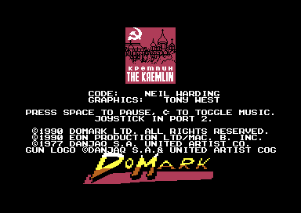
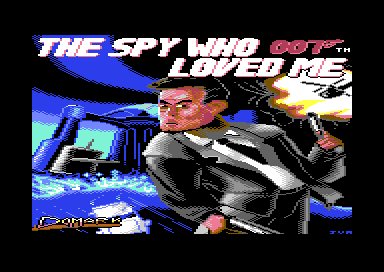

<meta charset="utf-8">
<meta name="viewport" content="width=device-width, initial-scale=1">
<title>The Spy Who Loved Me — graphics</title>
<link rel="preconnect" href="https://fonts.googleapis.com">
<link rel="stylesheet" href="https://fonts.googleapis.com/css2?family=Lato:wght@400;700;900&family=IBM+Plex+Mono:wght@400;500&display=swap">
<style>
:root{
  --bg:#23262d; --paper:#e9e7e1; --surface:#ffffff; --surface-2:#f1efea; --line:#d5d3cc; --line-soft:#e0ded8;
  --ink:#2f3136; --ink-soft:#55585f; --ink-mute:#80838a;
  --link:#1f5fa8; --link-hover:#154480; --accent:#1f5fa8;
  --amber:#c25a00; --cyan:#1f5fa8; --coral:#d04a3a; --green:#2a8a4a; --violet:#4a5bd6; --hl:#fff0c2;
  --chip:#2f3136; --chip-ink:#ffffff;
  --c64blue:#40318d; --c64grey:#686868;
  --fd:'Lato',system-ui,sans-serif; --fb:'Lato',system-ui,sans-serif; --fm:'IBM Plex Mono',ui-monospace,Menlo,monospace;
  --col:1080px; --gx:68px; --fs:17px; --lh:1.6; --hw:900; --h1:46px; --h2:26px; --sy:48px; --pp:26px; --r:10px;
  --plate-shadow:0 1px 2px rgba(0,0,0,.05),0 4px 14px rgba(0,0,0,.05);
}
*{box-sizing:border-box}
html{background:var(--bg);min-height:100%}
body{background:var(--paper);color:var(--ink);font-family:var(--fb);font-size:var(--fs);line-height:var(--lh);max-width:var(--col);margin:0 auto;min-height:100vh;padding:0 0 4rem}
h1,h2,h3{font-weight:var(--hw);letter-spacing:-.01em;text-wrap:balance;color:var(--ink);margin:0}
.wrap{padding:0 var(--gx)}
.hero{padding:48px var(--gx) 8px;text-align:left}
.eyebrow{font-family:var(--fm);font-size:12px;letter-spacing:.08em;text-transform:uppercase;color:var(--ink-mute);margin:0 0 10px}
.hero h1{font-size:var(--h1);line-height:1.15;letter-spacing:-.02em;margin:0 0 14px}
.hero .sub{margin:0 0 .6em;color:var(--ink-soft)}
section{padding:var(--sy) 0 24px}
section:last-of-type{border-bottom:none}
.fig{font-family:var(--fm);font-size:12px;letter-spacing:.08em;text-transform:uppercase;color:var(--ink-mute);margin:0 0 10px}
h2.t{font-size:var(--h2);margin-bottom:12px}
.lede{color:var(--ink-soft);margin:0 0 30px}
.plate{background:var(--surface);border:1px solid var(--line);border-radius:var(--r);padding:var(--pp);box-shadow:var(--plate-shadow)}
.cap{font-size:14px;color:var(--ink-mute);margin-top:14px;line-height:1.55}
.cap b{color:var(--ink);font-weight:700}
code{font-family:var(--fm);font-size:.82em;background:var(--chip);color:var(--chip-ink);border-radius:4px;padding:2px 6px;overflow-wrap:break-word;-webkit-box-decoration-break:clone;box-decoration-break:clone}

.ft-grid{display:grid;gap:6px}
.ft-grid button{padding:0;position:relative;line-height:0}
.ft-grid canvas{width:100%;image-rendering:pixelated;display:block}
.ft-tag{position:absolute;left:3px;top:3px;font:500 11px/1.3 var(--fm);background:rgba(255,255,255,.88);color:var(--ink);border-radius:3px;padding:1px 4px}
.ft-mark{position:absolute;right:3px;bottom:3px;font:500 10px/1.3 var(--fm);background:var(--chip);color:var(--chip-ink);border-radius:3px;padding:1px 4px}
.ft-big canvas{width:100%;max-width:768px;image-rendering:pixelated;display:block;margin:0 auto}
.ft-table{border-collapse:collapse;font-size:14px;width:100%}
.ft-table td,.ft-table th{border-bottom:1px solid var(--line-soft);padding:5px 8px;text-align:left;vertical-align:top}
.ft-two{display:grid;grid-template-columns:1fr 1fr;gap:16px;align-items:start}
.ft-four{display:grid;grid-template-columns:repeat(3,1fr);gap:12px;margin:0 0 20px}
.ft-four .plate,.ft-two .plate{margin:0;padding:12px}
.ft-shot,.ft-px{width:100%;height:auto;image-rendering:pixelated;display:block}
.ft-wide{max-width:960px;margin:0 auto}
.plate{margin:0 0 22px}
.ft-scroll{overflow-x:auto}
.ft-lab{display:block;font-family:var(--fm);font-size:13px;color:var(--ink-soft);margin:6px 0}
.ft-range{width:100%;max-width:520px;display:block}
.ft-controls{display:grid;grid-template-columns:repeat(3,1fr);gap:14px;margin:12px 0 0}
.ft-read{font-family:var(--fm);font-size:14px;background:var(--surface-2);border-radius:6px;padding:10px 12px;margin:12px 0 0}
.ft-bar-out{height:12px;background:var(--surface-2);border:1px solid var(--line);border-radius:6px;overflow:hidden;margin:10px 0 0;max-width:520px}
.ft-bar-out div{height:100%;background:repeating-linear-gradient(45deg,var(--amber) 0 6px,#e08a3c 6px 12px)}
.ft-meter{position:relative;width:110px;height:18px;background:var(--surface-2);border:1px solid var(--line);border-radius:4px;overflow:hidden}
.ft-meter span{position:absolute;left:0;top:0;bottom:0;background:var(--cyan);opacity:.35}
.ft-meter b{position:relative;font:500 12px/18px var(--fm);padding-left:6px}
.ft-objs{white-space:nowrap}
.ft-obj{display:inline-flex;flex-direction:column;align-items:center;margin:0 3px 0 0;padding:2px;background:#222;border-radius:4px;vertical-align:top}
.ft-obj i{font:500 10px/1.2 var(--fm);color:#fff;font-style:normal}
.ft-swapped{outline:2px dashed var(--amber);outline-offset:-2px}
.ft-swapped i{text-decoration:line-through;text-decoration-color:var(--amber)}
.ft-table canvas{background:#222;border-radius:4px;image-rendering:pixelated}
.ft-dead{display:flex;flex-wrap:wrap;gap:6px;margin:12px 0 0}
.ft-dead button{font-size:12px;padding:4px 8px}
@media (max-width:760px){:root{--gx:16px;--h1:36px;--pp:14px}.ft-two,.ft-four,.ft-controls{grid-template-columns:1fr}}
sup.fn{font-size:.7em;line-height:0}
sup.fn a{text-decoration:none}
sup.fn + sup.fn::before{content:","}
.overview-shot{margin:22px 0}
.overview-shot img{width:100%;max-width:768px;height:auto;aspect-ratio:384/272;image-rendering:pixelated;display:block}
.overview-shot figcaption{font-size:14px;color:var(--ink-mute);margin-top:8px;max-width:768px}
</style>

<!-- tabs -->
<header class="hero">
  <p class="eyebrow">Commodore 64 · 1990 · Domark</p>
  <h1>The Spy Who Loved Me</h1>
  <p class="sub">Every sprite shape in the game, its two character sets, the warship built out of characters, and the pictures shown while it loads.</p>
</header>
<main class="wrap">
<section id="sprites">
  <p class="fig">01 · Sprites</p>
  <h2 class="t">192 shapes for everything that moves</h2>
  <p class="lede">The sprite shapes fill <code>$4000-$6FFF</code>, frames <code>$00</code> to <code>$BF</code>, 64 bytes each. Every sprite is multicolour: its own colour, plus white and black shared by all of them (<a href="source-overlay.html#4599"><code>reset_sprites</code></a>). Click a frame to find its bytes in the listing.</p>
  <div class="plate">
    <label class="ft-lab">Own colour <select id="spyCol"></select></label>
    <div id="spySheet" class="ft-scroll"></div>
    <p class="cap" id="spyPick">Click a frame.</p>
  </div>
  <p>Frames <code>$00</code> to <code>$1F</code> share their memory with the code of the <a href="gameplay.html#shop">Q-truck shop</a>, the messages and the high-score table. That code waits under the I/O chips and the two swap places, a page per frame, whenever the game needs it (<a href="source.html#28B6"><code>swap_overlay</code></a>). The sprites are hidden while the swap is made. These pages show the sprites as they are during play.</p>
  <h3 style="margin:28px 0 8px">Frames the code names</h3>
  <div class="ft-scroll"><table class="ft-table" id="spyFrames"><thead><tr><th>Frames</th><th>What they are</th><th>Where the code picks them</th></tr></thead><tbody></tbody></table></div>
</section>

<section id="chars">
  <p class="fig">02 · Characters</p>
  <h2 class="t">Two character sets for the scenery</h2>
  <p>The scenery is built from multicolour characters. The road, the harbour and the open sea share one set at <code>$7000</code>, of which characters <code>$DB</code> to <code>$EF</code> are overwritten by the letters of the messages (<a href="source.html#286E"><code>copy_76d8</code></a>) and <code>$F0</code> to <code>$FF</code> by the <a href="#shots">shots</a>. The sea bed has a set of its own at <code>$F610</code>, copied over the first when that stage starts (<a href="source.html#293D"><code>underwater_charset</code></a>). Each character's colour comes from a table (<a href="source.html#E782"><code>char_colours</code></a>); on the sea bed every character has the same colour.</p>
  <div class="plate">
    <label class="ft-lab">Set <select id="spySet"><option value="0">Road, harbour and open sea ($7000)</option><option value="1">Sea bed ($F610)</option></select></label>
    <canvas id="spyChars" class="ft-px" style="max-width:768px"></canvas>
  </div>
  <p id="shots">Shots are not sprites. Each of the sixteen shots is a character of its own, <code>$F0</code> to <code>$FF</code>: the game copies the character under the shot into that character, sets the shot's pixels in it, and writes the shot's character into the screen in place of the scenery (<a href="source.html#34C0"><code>draw_shots</code></a>, <a href="source.html#363F"><code>place_shots</code></a>). Sixteen shots then cost no sprites at all.</p>
</section>

<section id="ship">
  <p class="fig">03 · The warship</p>
  <h2 class="t">A boss drawn into the scenery</h2>
  <p>The large enemy ship on the sea bed is too big for sprites. Its handler draws it, eight rows of sixteen characters from <code>$87C4</code>, straight into the top of the scenery as the map scrolls, so it moves down the screen with the sea bed (<a href="source.html#1821"><code>h_big_ship</code></a>). Sprites ride on top of it as its guns and parts (<a href="source.html#258D"><code>spawn_30</code></a>).</p>
  <div class="plate"><canvas id="spyShip" class="ft-px" style="max-width:512px;margin:0 auto"></canvas>
  <p class="cap">The ship's characters as stored, in the sea bed's character set and colours.</p></div>
</section>

<section id="loading">
  <p class="fig">04 · While it loads</p>
  <h2 class="t">The credits and the loading picture</h2>
  <p>The file <code>S0</code> on the disk shows The Kremlin's credits and then the loading picture while the game itself loads. Neither is in memory once the game runs, so they are shown here as the emulator drew them.</p>
  <div class="ft-two">
    <figure class="overview-shot" style="margin:0"><figcaption>The credits, with the two keys the game reads.</figcaption></figure>
    <figure class="overview-shot" style="margin:0"><figcaption>The loading picture.</figcaption></figure>
  </div>
</section>

</main>

<footer style="margin:16px 0 0;padding:22px var(--gx) 0;border-top:1px solid #e0ded8;font-family:'IBM Plex Mono',ui-monospace,Menlo,monospace;font-size:12px;color:#80838a"><a href="https://github.com/gamesexplained/gamesexplained" style="color:#1f5fa8;text-decoration:none">GitHub</a> · <a href="https://discord.gg/3V9GWyRDWV" style="color:#1f5fa8;text-decoration:none">Discord</a><br>© Games Explained contributors. Write-ups, facts and symbol maps are available under <a href="https://creativecommons.org/licenses/by-sa/4.0/" style="color:#1f5fa8;text-decoration:none">CC BY-SA 4.0</a>; code under <a href="https://opensource.org/licenses/MIT" style="color:#1f5fa8;text-decoration:none">MIT</a></footer>
<script src="../../lib/c64.js"></script>
<script>
(function () {
  const $ = id => document.getElementById(id);
  if (typeof C64 === 'undefined') { $('spySheet').textContent = 'This widget needs the site\'s shared scripts: open the page from the built site.'; return; }
  const P = C64.PAL, hex = (v, n = 2) => '$' + v.toString(16).toUpperCase().padStart(n, '0');
  const NAMES = ['black', 'white', 'red', 'cyan', 'purple', 'green', 'blue', 'yellow', 'orange', 'brown', 'light red', 'dark grey', 'grey', 'light green', 'light blue', 'light grey'];
  const link = (a, t) => '<a href="source.html#' + a + '"><code>' + (t || '$' + a) + '</code></a>';
  const FRAMES = [
    ['$01, $17, $18, $19, $63, $64', 'the Lotus on the road, by how hard it steers, with $18 the other half of its animation', link('869F', 'car_frames_land')],
    ['$92-$97, $99', 'the speedboat, by how hard it steers, with $99 the other half of its animation', link('86AC', 'car_frames_water')],
    ['$82-$86', 'the Lotus as a submarine on the sea bed', link('86B9', 'sub_frames_open')],
    ['$4C, $A0-$A3', 'the vehicle of the open sea, and a rival that sways the same way', link('86C2', 'sub_frames_other') + ', ' + link('24F7', 'spawn_27')],
    ['$44, $45, $46, $48', 'road obstacles that spin the car, slow it, or dent its armour', link('1E64', 'spawn_00') + ' to ' + link('1EA9', 'spawn_03')],
    ['$05, $06, $07, $0A, $0D, $16, $98', 'enemy cars and vehicles', link('1FA7', 'spawn_09') + ' and others'],
    ['$08', 'the Q-truck, on fixed sprites', link('205D', 'spawn_13')],
    ['$31, $32', 'the boss and its body', link('20EF', 'spawn_14')],
    ['$1A, $49', 'small objects the car knocks aside, on land and on water', link('1EF0', 'spawn_05')],
    ['$87-$8C', 'the sea bed\u2019s divers, which weave on one of eight paths and drop shots', link('22D5', 'spawn_17') + ', ' + link('8F73', 'random_scripts')],
    ['$36', 'the laser, the car’s and the enemies’', link('3B24', 'fire_laser')],
    ['$69-$6D', 'pickups that fill a weapon or the armour', link('231A', 'spawn_18') + ', ' + link('32C4', 'collect_pickup')],
    ['$2D', 'a puff of smoke behind the car', link('391D', 'make_smoke')],
    ['$A4-$A6, $5A-$5C', 'the score signs: “-50”, “50” and “100”, in two colourings', link('2712', 'score_popup')],
    ['$71', 'the car in the air over a ramp', link('39B4', 'ramp_jump')],
    ['$79', 'the ramp', link('2296', 'spawn_23')],
    ['$AC-$B4', 'the icons of the Q-truck’s nine items', '<a href="source-overlay.html#4000"><code>shop_items</code></a>'],
    ['$B6-$BC', 'the seven pieces of a large object that moves as one', link('244C', 'spawn_26')]];
  const tb = $('spyFrames').tBodies[0];
  for (const [f, t, w] of FRAMES) { const tr = tb.insertRow(); tr.insertCell().textContent = f; tr.insertCell().textContent = t; tr.insertCell().innerHTML = w; }
  const sel = $('spyCol');
  NAMES.forEach((n, i) => { const o = document.createElement('option'); o.value = i; o.textContent = n; sel.appendChild(o); });
  sel.value = 10;
  C64.load('parts/main/listing.json').then(L => {
    const ram = L.ram, S = 3, W = 24 * S + 8, H = 21 * S + 22, PER = 8;
    const cv = document.createElement('canvas'); cv.className = 'ft-px'; cv.style.maxWidth = (PER * W) + 'px';
    $('spySheet').appendChild(cv);
    function draw() {
      C64.canvas(cv, PER * W, 24 * H);
      const ctx = cv.getContext('2d'), col = P[+sel.value];
      ctx.fillStyle = '#f1efea'; ctx.fillRect(0, 0, cv.width, cv.height);
      for (let f = 0; f < 192; f++) {
        const x = (f % PER) * W, y = Math.floor(f / PER) * H, data = ram.subarray(0x4000 + f * 64, 0x4000 + f * 64 + 63);
        ctx.fillStyle = P[12]; ctx.fillRect(x + 4, y + 16, 24 * S, 21 * S);
        C64.drawSpriteMC(ctx, data, x + 4, y + 16, S, col, P[1], P[0]);
        ctx.fillStyle = '#2f3136'; ctx.font = '500 12px "IBM Plex Mono", monospace'; ctx.fillText(hex(f), x + 4, y + 12);
      }
    }
    draw(); sel.onchange = draw;
    cv.addEventListener('click', e => {
      const r = cv.getBoundingClientRect(), k = cv.width / r.width;
      const f = Math.floor((e.clientY - r.top) * k / H) * PER + Math.floor((e.clientX - r.left) * k / W);
      if (f >= 0 && f < 192) { const a = 0x4000 + f * 64; $('spyPick').innerHTML = 'Frame ' + hex(f) + ': ' + link(a.toString(16).toUpperCase(), hex(a, 4)); }
    });
    // character sets: the road set takes each character's colour from char_colours ($E782) with
    // multicolours 12 and 8 (start_section, $198A); the sea bed paints colour 15 with 9 and 5 ($1A6A)
    function chars() {
      const sea = $('spySet').value === '1', base = sea ? 0xF610 : 0x7000, cs = ram.subarray(base, base + 0x800);
      const cvs = $('spyChars'), s = 2, per = 32;
      C64.canvas(cvs, per * 9 * s, 8 * 9 * s);
      const ctx = cvs.getContext('2d'); ctx.fillStyle = '#f1efea'; ctx.fillRect(0, 0, cvs.width, cvs.height);
      for (let i = 0; i < 256; i++) {
        const c = sea ? 15 : (i < 240 ? ram[0xE782 + i] & 15 : 1), x = (i % per) * 9 * s, y = Math.floor(i / per) * 9 * s;
        if (c & 8) C64.drawGlyphMC(ctx, cs, i, x, y, s, [P[0], P[sea ? 9 : 12], P[sea ? 5 : 8], P[c & 7]]);
        else C64.drawGlyph(ctx, cs, i, x, y, s, P[c], P[0]);
      }
    }
    chars(); $('spySet').onchange = chars;
    // the ship: 8 rows of 16 characters from $87C4 (h_big_ship, $1821), sea-bed set, multicolours 11 and 15 (spawn_30)
    const sc = $('spyShip'), s = 3, cs = ram.subarray(0xF610, 0xF610 + 0x800);
    C64.canvas(sc, 128 * s, 64 * s);
    const sx = sc.getContext('2d'); sx.fillStyle = '#000'; sx.fillRect(0, 0, sc.width, sc.height);
    for (let r = 0; r < 8; r++) for (let c = 0; c < 16; c++) C64.drawGlyphMC(sx, cs, ram[0x87C4 + r * 16 + c], c * 8 * s, r * 8 * s, s, [P[0], P[11], P[15], P[7]]);
  });
})();
</script>
